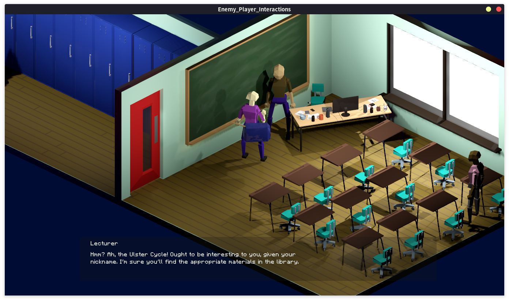

Created in the Godot engine, this project, while short, marked a huge learning journey for me. From working with a new game engine, to learning the basics of 3D modelling in Blender, I laid the foundations for a multitude of new skills with this project
Itch.io Page 